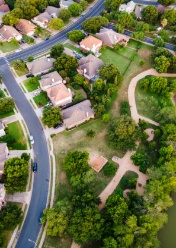

DO YOU HATE IT
When you see
this in photo's?
Real estate photography is an essential aspect of the real estate industry. The photographs that are taken of a property can make or break a sale. Therefore, it is important to ensure that the photographs are of high quality and showcase the property in the best possible way. Unfortunately, some real estate photographers make careless mistakes that can detract from the overall quality of the photographs. Three of the most common mistakes is leaving bins in photos, toilet seats up, and clutter on benches.
Bins in photos
Bins, garbage cans, or recycling bins are often unsightly and can ruin the aesthetic appeal of a property. Unfortunately, some photographers do not pay attention to the placement of these items and end up leaving them in the frame of the photograph. This can fbe distracting and may even turn off potential buyers.
Toilet seats up
Another common mistake that real estate photographers make is leaving the toilet seat up in photographs. This is an unfortunate oversight and can be embarrassing for the property owner. It is important to remember that real estate photography is not just about capturing images, but also about creating a positive impression of the property.
Cluttered Benches
In addition to leaving bins in photos and toilet seats up, clutter on benches and around the house is another common mistake that real estate photographers make. When potential buyers look at real estate photographs, they want to see a clean and organized space that they can envision themselves living in. Clutter can be distracting and can make the space look smaller than it actually is.
Moreover, it is important to remember that clutter not only detracts from the overall quality of the photographs but can also create a negative impression of the property. Potential buyers may see the clutter and assume that the property is not well-maintained, or that there may be underlying issues with the property.
In conclusion, clutter on benches and around the house is another common mistake that real estate photographers make. It is important to choose a photographer that is willing to go the extra mile and remove any clutter from the frame of the photograph to create a clean and organized space that will appeal to potential buyers. By paying attention to these small details, real estate photographers can ensure that the photographs showcase the property in the best possible way and increase the chances of a successful sale.